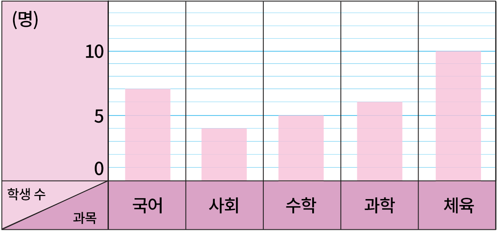

- 문제 1
- 문제 2
- 문제 3
- 문제 4
- 문제 5
- 문제 6
- 문제 7
- 문제 8
- 문제 9
-
-
-
-
-
[문제 1~문제 4]종호네 반 학생들이 좋아하는 과목을 조사하여 나타낸 표와 그래프입니다. 물음에 답하시오.
아래의 표와 그래프를 보고 서로 다른 점을 써 보시오.
좋아하는 과목별 학생 수과목 체육 음악 미술 수학 국어 합계 학생 수(명) 9 3 6 5 2 25 -
[문제 1~문제 4]종호네 반 학생들이 좋아하는 과목을 조사하여 나타낸 표와 그래프입니다. 물음에 답하시오.
아래의 표와 그래프를 보고 서로 다른 점을 써 보시오.
좋아하는 과목별 학생 수-
예
표는 학생 수를 수로 나타내고, 막대그래프는 학생 수를 막대의 길이로 나타냅니다.
-
예
-
-
막대그래프에 대해 바르게 설명한 것을 고르시오.
-
ㄱ막대그래프는 조사한 수를 막대 모양으로 나타낸 그래프입니다.
-
ㄴ막대그래프는 전체 조사한 수의 합계를 한눈에 알아볼 수 있습니다.
ㄱ -
-
학생들이 좋아하는 과목을 조사하여 나타낸 표와 막대그래프입니다. 막대그래프에서 가로와 세로는 각각 무엇을 나타내는지 쓰시오.
과목별 좋아하는 학생 수과목 국어 사회 수학 과학 체육 합계 학생 수(명) 7 4 5 6 10 32 -

-
-
가로과목
-
세로학생 수
-
-
-
학생들이 좋아하는 과목을 조사하여 나타낸 표와 막대그래프입니다. 막대의 세로 눈금 한 칸은 몇 명인지 쓰시오.
과목별 좋아하는 학생 수과목 국어 사회 수학 과학 체육 합계 학생 수(명) 7 4 5 6 10 32 -
명1
-
표와 막대그래프 중 전체 학생 수를 알아보기에 어느 것이 더 편리한지 쓰시오.
과목별 좋아하는 학생 수과목 국어 사회 수학 과학 체육 합계 학생 수(명) 7 4 5 6 10 32 -
표
-
표와 막대그래프 중 학생들이 가장 좋아하는 과목을 한눈에 알아보기에 어느 것이 더 편리한지 쓰시오.
과목별 좋아하는 학생 수과목 국어 사회 수학 과학 체육 합계 학생 수(명) 7 4 5 6 10 32 -
막대그래프